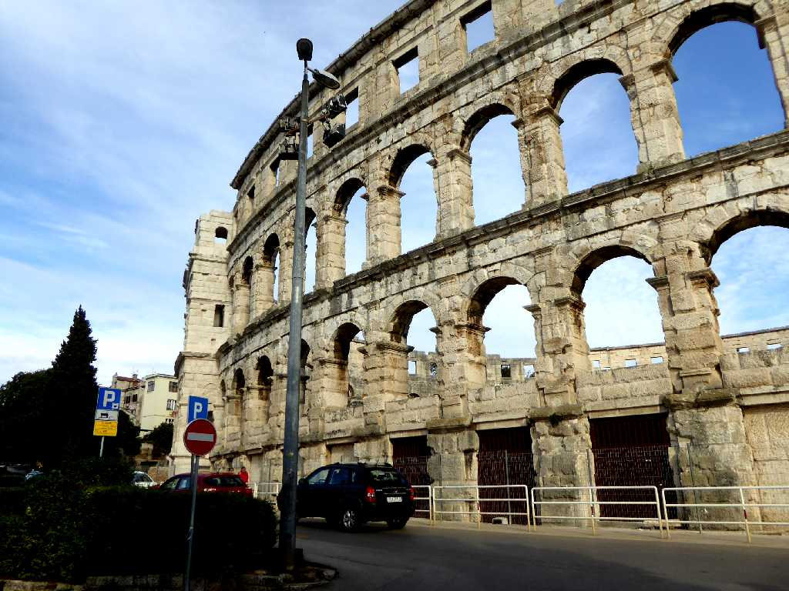
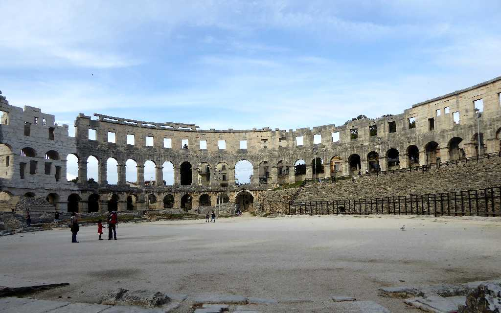
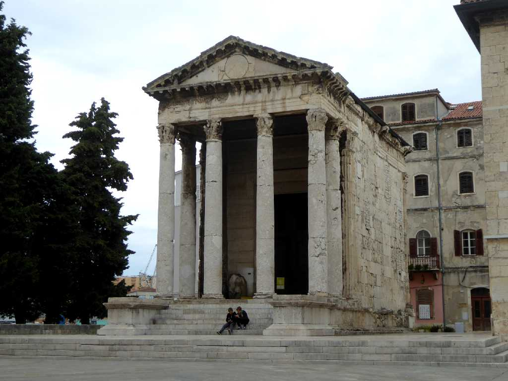
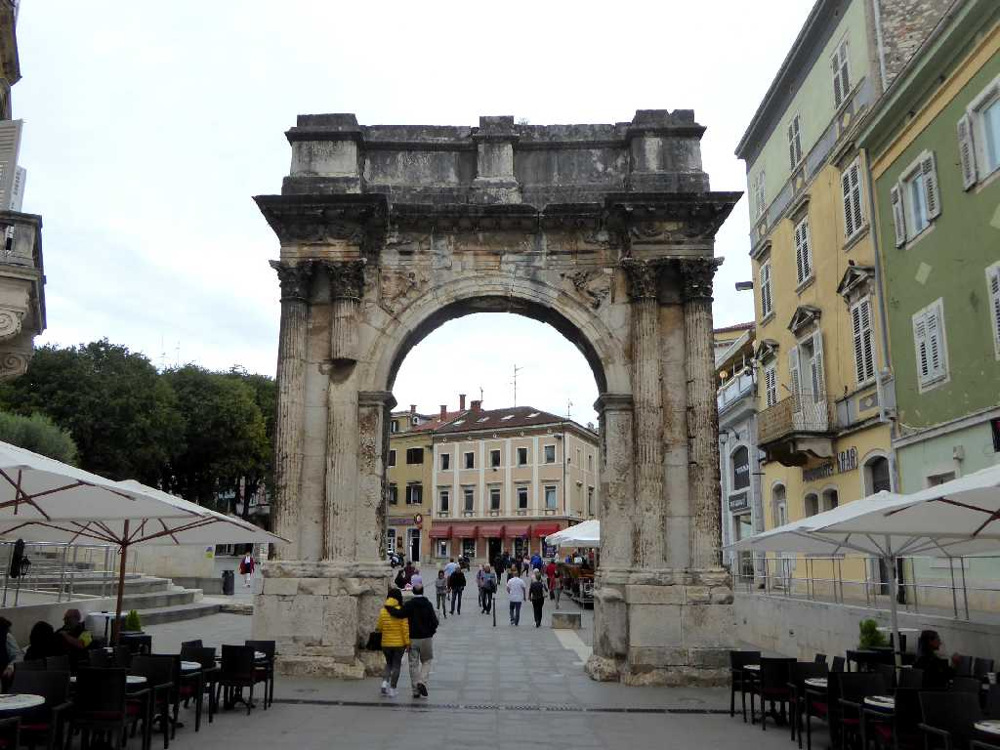
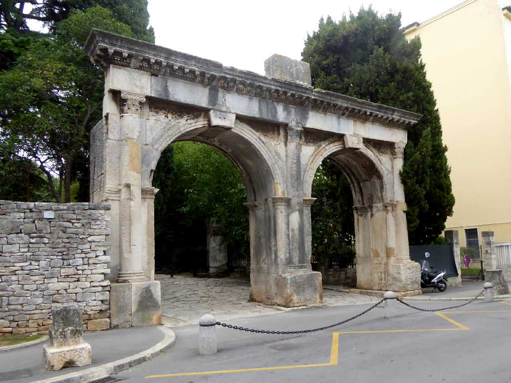
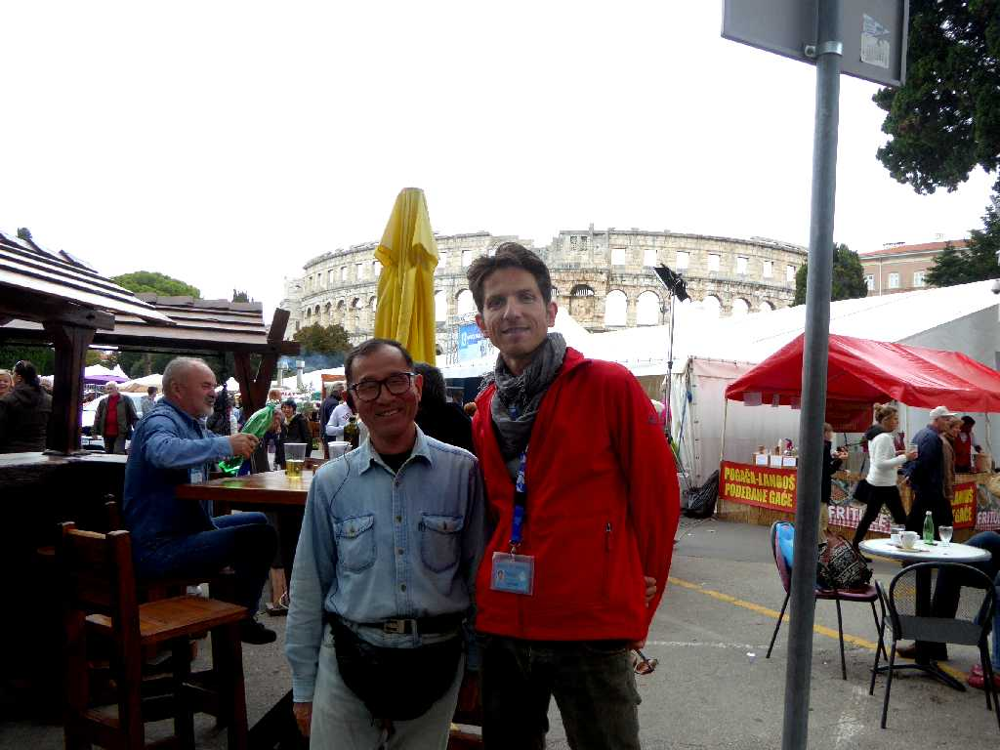

Pula
古代ローマ時代より栄えたアドリア海の美しい街プーラ

Anfiteatro
古代ローマ時代の１世紀頃に創られた円形闘技場で高さ３２m直径１３０m２万人収容できお祭りの会場などとして利用されている

Augustov Hram
紀元前後に創られたローマ神と初代皇帝アウグストゥスを祀った神殿

Slavoluk Sergijevaca
クロアチア周辺地域で勝利したセルギウス将軍を讃え紀元前２９年に創られた凱旋門

Dvojna vrata
紀元前２世紀頃に創られた城壁門の一つで２世紀頃に一つのアーチから二つのアーチに改築された市内に入る１０門の一つ双子門

October 8 2016 Pula